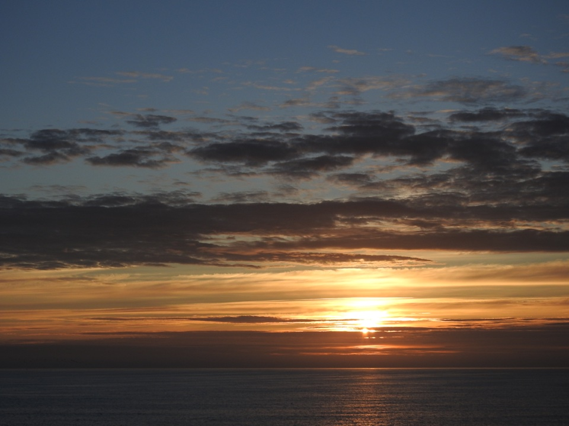

用一张照片，给小城换色
选晚霞或海面，从同一张照片提取两套配色。小城会跟着换色，拖动它可以从不同角度比较。
从照片取色


小城的配色
当前浏览器无法绘制 3D 场景。仍可查看下方提取的颜色。
正在载入示例照片…
照片在浏览器内取色。来源见 Color Thief 和 Three.js。
选晚霞或海面，从同一张照片提取两套配色。小城会跟着换色，拖动它可以从不同角度比较。

当前浏览器无法绘制 3D 场景。仍可查看下方提取的颜色。
正在载入示例照片…
照片在浏览器内取色。来源见 Color Thief 和 Three.js。